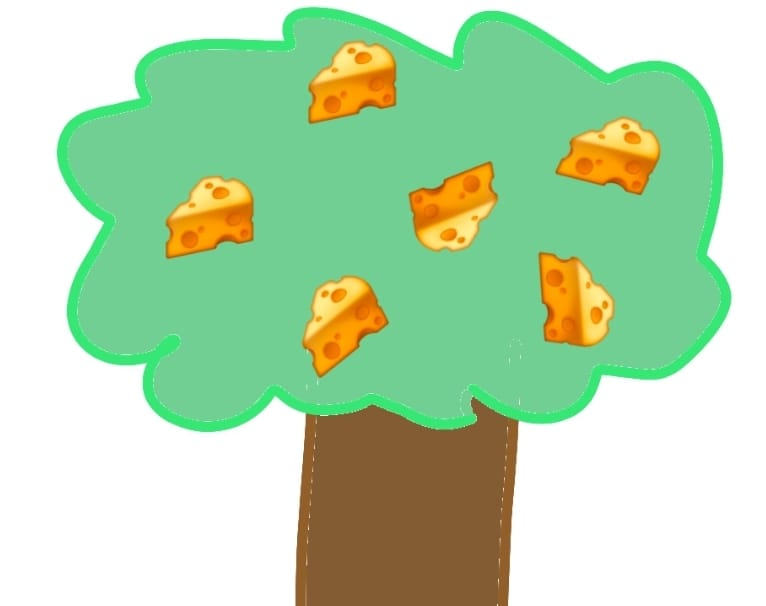
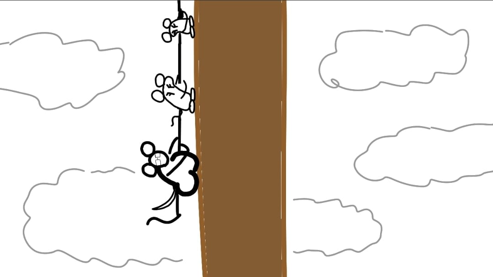
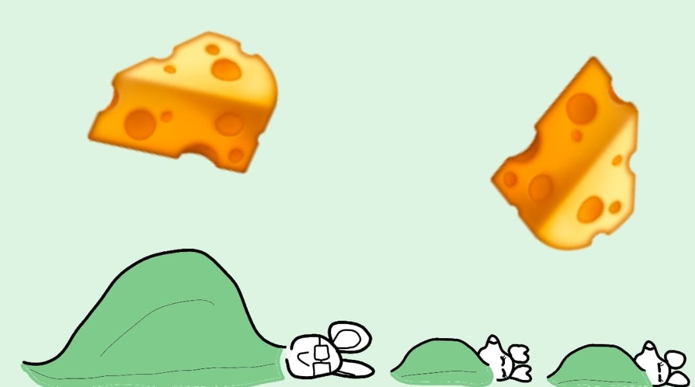
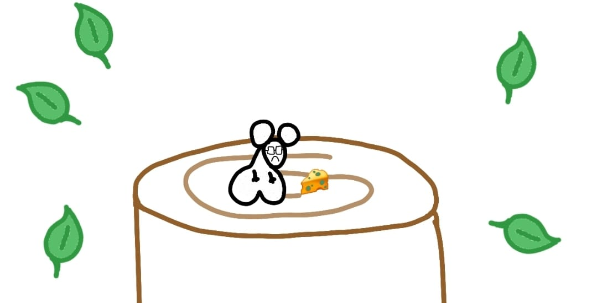
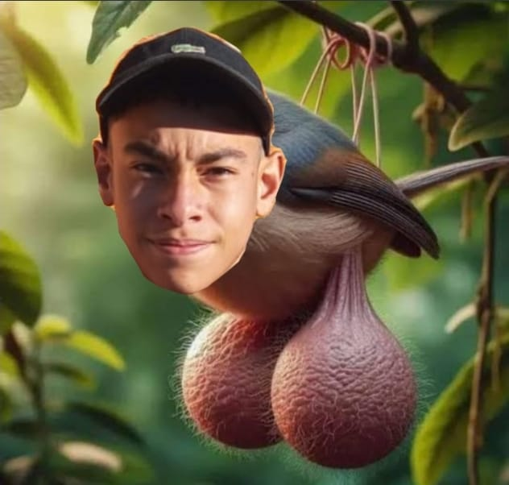

A subida na árvore foi repleta de desafios. José, apesar de determinado, sofria com o peso descomunal de suas bolas, que frequentemente ficavam presas nos galhos ou o puxavam para baixo. Num momento crítico, as Novinhas de Jose tiveram que improvisar um sistema de polias feito de cipós e folhas para levantar José pelo ar, enquanto ele girava descontroladamente como um pêndulo vivo.

Em outra situação, uma forte rajada de vento quase os derrubou, mas José conseguiu salvar a equipe ao usar suas bolas como âncoras. "Nunca pensei que minhas bolas salvariam vidas!" exclamou ele, orgulhoso.

Depois de muitas aventuras, desafios, tombos e momentos hilários, eles finalmente chegaram ao topo da árvore. Exaustos, decidiram dormir e colher os queijos na manhã seguinte.

Porém, ao amanhecer, o inverno havia terminado e o calor retornara. José acordou sentindo algo estranho. Suas bolas, antes encolhidas pelo frio, dobraram de tamanho instantaneamente. O peso foi tão grande que um enorme pedaço da árvore quebrou, fazendo suas Novinhas e todos os queijos despencarem. Apenas José ficou, solitário no topo, segurando um queijo mofado enquanto lamentava sua existência.

Fim..?
Foi quando uma sombra enorme o cobriu...
...
Uma voz grave e debochada ressoou pelos céus:
— Esteja pronto para minha chegada, Boludinho.

José olhou para cima e viu a imponente figura de Big Bird Leo, um pássaro colossal conhecido por suas próprias... peculiaridades anatômicas. Se José tinha bolas gigantes, Leo tinha duas luas penduradas entre as pernas.
Leo pousou suavemente no tronco da árvore com um sorriso malicioso no rosto. Ele olhou para José e disse com um tom desdenhoso:
— "Você teve uma missão simples, Boludinho. Só precisava pegar um queijo e sair antes que eu chegasse. Mas ao invés disso, você arruinou tudo! Minha deliciosa Árvore de Queijos, toda arregaçada, após um longo inverno do Krai... E agora, você vai ter que lidar com as consequências."
José, claramente abalado, segurava um pedaço de queijo mofado e tentou não se deixar abater.
— "Agora não é um bom momento," José disse, com as lágrimas quase escapando de seus olhos.
Big Bird Leo se aproximou com uma expressão ainda mais safada e cruzou as asas.
— "Olha... Vou ser direto, Boludinho. Eu sou um cara compreensivo... E se você não fizer o que eu mandar, eu vou ter que levar você para nossa lua de mel, sim? Fui enviado pelo meu clã de passarinhos boludos para achar uma esposa. E adivinhe quem eu escolhi?"
José arregalou os olhos, surpreso.
— "Não... Não é possível!"
Leo deu uma risadinha, e seu sorriso ficou ainda mais sem vergonha.
— "Sim, meu bem, você foi o escolhido. Você é o par perfeito. Agora, vamos lá... Me deixe pegar nas suas... belas luas cheias." Ele disse, provocando todo amostradinho.
José, fora de si, respondeu com raiva:
— "Isso não vai acontecer, Leo! Tudo isso é culpa minha, eu perdi tudo! Perdi meus amigos, perdi os queijos, perdi tudo! E agora... o que eu quero é chutar as bolas de alguém tão forte que ele nunca mais ande!"
Big Bird Leo mordeu seus labios de passaro.
— ai Boludinho... Pare com essas brincadeiras gostosas rs"